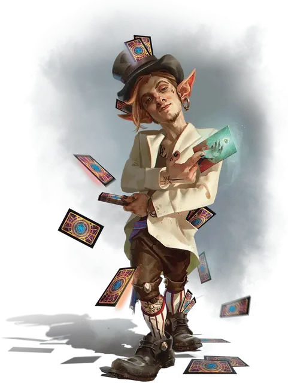

Риффлер
Riffler
Маленькая Фея, хаотично-нейтральная

Класс Доспеха 15 (природный доспех)
Хиты 90 (20к6 + 20)
Скорость 30 футов, копая 20 футов
| мод | спас | ||
|---|---|---|---|
| СИЛ | 8 | −1 | −1 |
| ЛОВ | 16 | +3 | +6 |
| ТЕЛ | 12 | +1 | +1 |
| мод | спас | ||
|---|---|---|---|
| ИНТ | 11 | +0 | +0 |
| МДР | 15 | +2 | +2 |
| ХАР | 17 | +3 | +6 |
Навыки Ловкость рук +9, Магия +6, Проницательность +5, Скрытность +6
Сопротивление урону излучение, некротическая энергия
Чувства тёмное зрение 60 футов, пассивное Восприятие 12
Языки Общий, Сильван
Опасность 5 (1800 опыта)
Бонус мастерства +3
Особенности
Чувство карты. Риффлер может почувствовать присутствие магических карт, включая колоды многих вещей [deck of many things] и другие магические колоды, в пределах 1 мили. Он знает направление к любым подобным картам в этой области. Эффекты, защищающие цель от магии Прорицания, блокируют это чувство.
Скользящий шаг. Риффлер может копать сквозь любой немагический материал, не являющийся железом, перемешивая вещество, через которое риффлер проходит, как карты, образуя туннель, который закрывается за риффлером.
Действия
Мультиатака. Риффлер совершает две атаки Призрачной картой.
Призрачная карта. Рукопашная или дальнобойная атака заклинанием: +6 к попаданию, досягаемость 5 фт. или дистанция 60 футов, одна цель. Попадание: 8 (1к10+3) урона силовым полем плюс 5 (1к10) урона излучением если на к10 четное число или некротической энергией, если нечётное.
Раскидывание карт (перезарядка 5-6). Риффлер волшебным образом выпускает поток спектральных карт 30-футовым конусом. Каждое существо в этой области должно совершить спасбросок Ловкости Сл 14. При провале существо получает 27 (5к10) урона силовым полем и становится опутанным в течение 1 минуты, поскольку карты облепливают его. При успехе существо получает только половину этого урона. Опутанное существо может повторять спасбросок в конце каждого своего хода, оканчивая на себе действие эффекта в случае успеха.
Уход в иной мир. Риффлер может наложить заклинание уход в иной мир [plane shift], без использования материальных компонентов и используя Мудрость в качестве базовой характеристики.
Реакции
Перетасовка судьбы. Когда существо, которое риффлер может видеть в пределах 30 футов, совершает проверку характеристик, бросок атаки или спасбросок, риффлер может волшебным образом заставить это существо бросить к6 и либо добавить выпавшее значение к общему результату, либо вычесть его из общего результата (на выбор риффлера), потенциально изменяя результат.
Описание
Риффлеры - миниатюрные феи, напоминающие гномов и одержимые судьбой. Древнейшие истории о риффлерах рассказывают, что эти опасно любопытные духи проявлялись как физические существа, когда колода многих вещей [deck of many things] была впервые перетасована. Риффлеры были настолько очарованы мягким звуком, издаваемым шелестящими картами, что создали для себя физические тела, чтобы обладать этим новым инструментом судьбы и понимать его.
Риффлеры бродят по Стране Фей и Материальному плану в поисках колоды многих вещей [deck of many things]. Они собирают карты, обмениваются ими, копят их и разбрасывают по мирам, и все это ради непостижимого плана манипулирования судьбой мультивселенной. Риффлеры с такой же вероятностью отдадут колоду остро нуждающимся искателям приключений, как и отнимут карты у невинного человека любыми необходимыми средствами.
И Солнечный бастион, и Зловещие разрушители знают о риффлерах и их одержимости колодами многих вещей, и эти организации внимательно следят за признаками присутствия этих волшебных существ, поскольку это обычно означает, что колода находится поблизости.